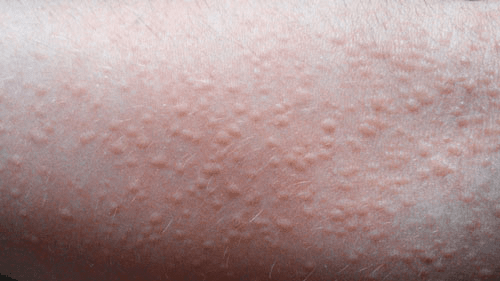

Hives, also known as urticaria, are itchy, raised welts that are found on the skin. They are usually red,
pink, or flesh-colored, and sometimes they sting or hurt. In most cases, hives are caused by an allergic
reaction to a medication or food or a reaction to an irritant in the environment.
In many cases, hives are an acute (temporary) problem that may be alleviated with allergy medications.
Most rashes go away on their own. However, chronic (ongoing) cases, as well as hives accompanied by a
severe allergic reaction, are larger medical concerns.

The most common causes of hives are allergic reactions. These can be caused by any allergen you might be sensitive to, including:
Anaphylaxis is a severe, life-threatening allergic reaction. In this condition, hives are often accompanied with breathing difficulties, nausea or vomiting, severe swelling, and dizziness. Call 911 immediately if you suspect anaphylaxis.
Chronic hives are ongoing cases that don’t necessarily have an identifiable cause. Also called chronic urticaria, this condition is marked by recurring hives that can interfere with your lifestyle. According to the Mayo Clinic, these can last between six weeks and several months or years.
You may suspect chronic hives if you have welts that don’t go away within six weeks. While not life-threatening, this form of hives can be uncomfortable and difficult to treat. They may also be a symptom of an underlying health problem, such as:
This form of acute hives is considered mild. Excessive scratching or continuous pressure on the skin causes it. Dermatographism usually clears up on its own in a short period of time without treatment.
Sometimes changes in temperature can induce hives in people who are sensitive to such changes. Cold-induced hives may occur from cold water or air exposure, while body heat from physical activity may cause exercise-induced hives. Exposure to sunlight or tanning beds may also bring about solar hives in some people.
Both viral and bacterial infections can cause hives. Common bacterial infections causing hives include urinary tract infections and strep throat. Viruses that cause infectious mononucleosis, hepatitis, and colds often cause hives.